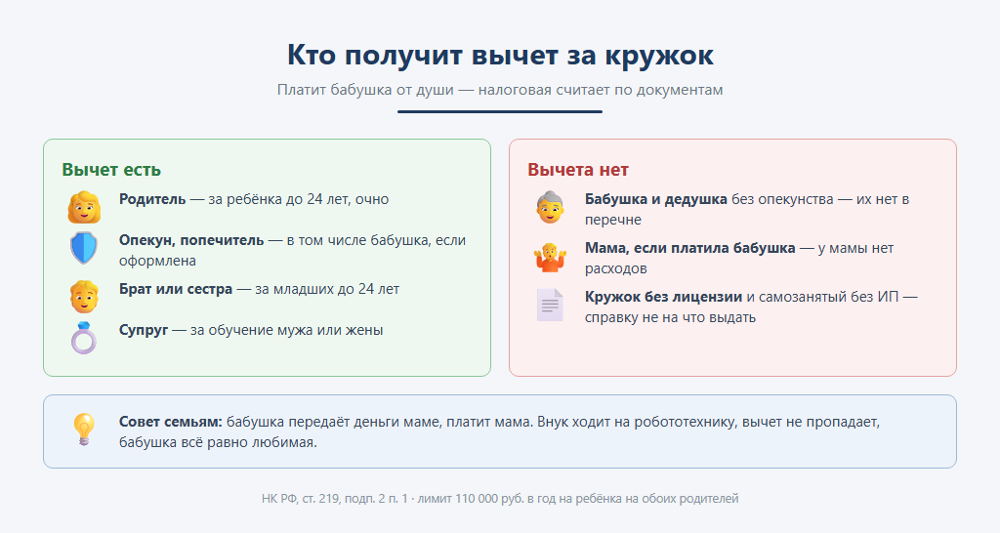
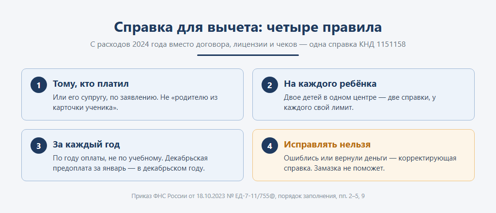
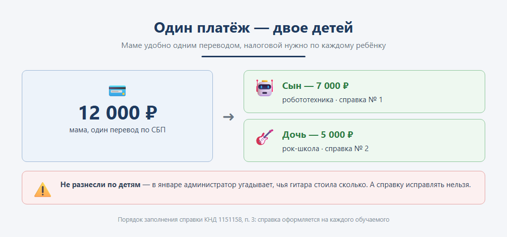
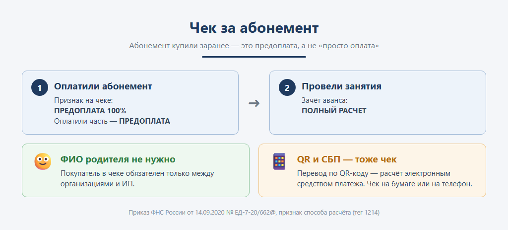
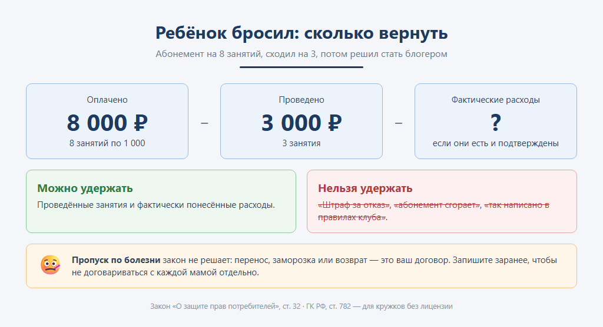

Абонемент в школу робототехники оплатила бабушка, в договоре мама, ходит внук, а в январе все трое приходят за справкой для налоговой. Разбираем, кому центр вправе её выдать, почему один платёж за двоих детей надо делить, какой чек пробивать за абонемент и сколько можно удержать, если ребёнок бросил занятия.
У детского центра, рок-школы или школы программирования плательщик и ученик почти никогда не совпадают. Платит мама, папа, бабушка, старший брат, иногда один перевод за двоих детей сразу. Сам ученик за свои уроки не платит никогда — он занят: паяет робота или учит третий аккорд.
Пока речь о приходе денег, это никого не волнует. Волновать начинает в двух местах: в январе, когда у стойки администратора мама, папа и бабушка выясняют, кто из них платил, и в тот день, когда ребёнок бросает занятия, а родитель требует деньги назад.
Ссылки на нормы собраны в конце, все — на официальные государственные сайты.
Налоговый кодекс даёт вычет за обучение ребёнка его родителю, опекуну или попечителю. Ещё вычет могут получить брат или сестра, которые платят за младших, и супруг, который платит за обучение мужа или жены. Перечень закрытый.
Бабушек и дедушек в нём нет. Бабушка получит вычет за внука, только если она оформлена его опекуном. Во всех остальных случаях её деньги на вычет не работают — ни у неё самой, ни у мамы.

Сколько: с расходов 2024 года — до 110 000 руб. в год на каждого ребёнка, общих на обоих родителей. Вернуть можно до 14 300 руб. на ребёнка (13 % от лимита). Брат или сестра заявляют вычет в другом лимите — 150 000 руб., общем с собственным обучением, лечением и спортом.
И главное условие для центра: у организации должна быть образовательная лицензия. Индивидуальному предпринимателю, который учит сам, лицензия не нужна — достаточно, чтобы в ЕГРИП были сведения о его образовательной деятельности. ИП с нанятыми педагогами без лицензии не обойдётся. Кружок без лицензии и преподаватель-самозанятый без статуса ИП права на вычет не дают: справку им выдавать не на что.
Раньше к декларации прикладывали договор, лицензию и чеки. С расходов 2024 года всё это заменила одна справка об оплате образовательных услуг по форме ФНС (КНД 1151158). Центр заполняет её, и из этой справки налоговая узнаёт всё: кто платил, за кого, сколько и за какой год.
Четыре правила из порядка её заполнения, на которых спотыкаются чаще всего:

По заявлению родителя центр может и сам передать сведения в налоговую — в течение 30 дней. Тогда справка появится у родителя в личном кабинете, и ему ничего не нужно подавать самому. Но это «при наличии технической возможности»: нужны канал связи с налоговой и квалифицированная электронная подпись.
Отсюда прямо следуют два требования к тому, как центр ведёт оплаты.
Хранить плательщика по каждой оплате, а не только ученика. Если в учёте записано «оплатил Петя Иванов», в январе не собрать ни одной справки: непонятно, мама платила, папа или бабушка. Если записано «ответственное лицо — мама», а платила бабушка, справка на маму будет с недостоверными сведениями.
Делить общий платёж по детям. Мама перевела 12 000 руб. за сына и дочь одним платежом — в учёте это должны быть две суммы, по каждому ребёнку. Иначе нечего поставить в две отдельные справки, а у каждого ребёнка ещё и свой лимит 110 000 руб.

| Кто платит | Кто учится | Кому справка | Вычет |
|---|---|---|---|
| Мама со своей карты, абонемент на полгода | Сын, школа робототехники с лицензией | Маме, обучаемый — сын | У мамы, до 110 000 руб. на сына |
| Папа, а заявить вычет хочет мама | Дочь, музыкальная школа с лицензией | Одна справка на эти расходы: по заявлению папы или мамы как его супруги | Может заявить мама; лимит 110 000 руб. общий на обоих |
| Бабушка со своей карты | Внук | Только бабушке — маме на эти деньги нельзя | Нет ни у кого: бабушки нет в перечне, мама не платила |
| Бабушка — оформленный опекун | Внук 12 лет | Бабушке | Есть, как у опекуна |
| Мама одним платежом за двоих | Сын и дочь, школа программирования | Две справки, на каждого своя сумма | У мамы, по 110 000 руб. на каждого |
| Старший брат, работает | Сестра 16 лет, рок-школа с лицензией | Брату, обучаемая — сестра | У брата, в лимите 150 000 руб. |
| Мама | Ребёнок у преподавателя-самозанятого без ИП или в кружке без лицензии | Не выдаётся | Нет |
Самый частый и самый обидный случай — третья строка. Бабушка искренне помогает, а вычет пропадает у всей семьи. Налоговая бабушку уважает, но в перечень не внесла. Совет родителям простой: пусть бабушка передаёт деньги маме, а платит мама — своей картой или наличными в кассу на своё имя. Центру стоит сказать об этом родителям при записи, а не в январе.
Закон об образовании прямо разрешает трёхсторонний договор: центр, ученик и тот, кто обязуется оплатить обучение. Бабушка вполне может быть заказчиком и плательщиком — просто вычета это ей не даст. В правилах оказания платных образовательных услуг заказчик и обучающийся — разные понятия, и в договоре указывают обоих, если учится не заказчик.
Кстати, эти правила должны были перестать действовать в конце 2026 года. В августе правительство продлило их до 1 сентября 2032 года, так что статьи с фразой «действуют до конца 2026-го» уже устарели.
У кружка без лицензии договор обычный — возмездного оказания услуг по Гражданскому кодексу.

Абонемент оплачен заранее — это предоплата, и на чеке признак «ПРЕДОПЛАТА 100%». Когда занятия проведены, аванс зачитывается чеком «ПОЛНЫЙ РАСЧЕТ». Оплатили часть — признак «ПРЕДОПЛАТА» без процентов.
ФИО и ИНН родителя в чеке указывать не нужно: эти реквизиты обязательны только в расчётах между организациями и предпринимателями. Для вычета чек с расходов 2024 года вообще не нужен — нужна справка.
Оплата по QR-коду и через СБП — не повод обойтись без чека. Это расчёт электронным средством платежа, и чек нужен так же, как при оплате картой: на бумаге или на телефон либо почту родителя.
Спорный момент, о котором стоит знать. Когда пробивать зачёт аванса по абонементу на месяц — после каждого занятия или один раз в конце периода, — официального разъяснения для детских центров на сайте ФНС нет. Если ваша инспекция отвечала на этот вопрос, напишите в комментариях, дополню.
Бывает: три занятия робототехникой — и ребёнок понимает, что его призвание в видеоблогах. Родитель вправе отказаться от занятий в любой момент. Закон о защите прав потребителей разрешает центру удержать только фактически понесённые расходы — не «штраф за отказ» и не «абонемент сгорает». Для кружка без лицензии то же самое говорит Гражданский кодекс.

А вот как быть с пропуском по болезни — перенести занятие, заморозить абонемент или вернуть деньги, — закон не решает. Это условие вашего договора, и его лучше записать заранее, чем договариваться с каждой мамой отдельно.
И не забудьте про справку: если деньги вернули после того, как справка выдана, нужна корректирующая справка.
Посещаемость, абонементы и долги детские центры ведут кто в таблицах, кто в отраслевых конфигурациях, кто в доработках к Бухгалтерии или УНФ. Мы делаем для 1С:Бухгалтерии 3.0, 1С:Управления нашей фирмой и 1С:Управления торговлей расширение «Учёт занятий». Сейчас оно ведёт учеников и их оплаты, абонементы с заморозкой и списанием занятий по урокам, долги, возвраты и рассылку должникам. Учёт нескольких плательщиков у одного ученика и справки для вычета в нём пока нет — эта статья как раз о том, почему они нужны.
Расскажите в комментариях, как у вас: сколько родителей в январе просят справку, часто ли платят бабушки и как вы делите общие платежи. Это самое полезное дополнение к статье.